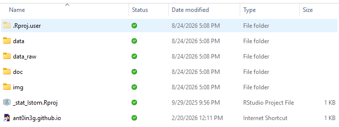

Organisation pratique
Prise en main — OneDrive, R et RStudio
Dossier OneDrive
Afin de faciliter notre collaboration, un dossier OneDrive vous sera partagé pour les travaux dirigés et les différents projets.

Il vous est demandé de synchroniser ce dossier OneDrive sur votre ordinateur personnel.
Structure du dossier
Le dossier partagé s'organise autour d'une arborescence fixe, où chaque sous-dossier a une fonction précise :
data_raw— réservé aux données brutes : les fichiers d'origine, tels que récupérés, qui ne doivent jamais être modifiés.data— les données une fois nettoyées et transformées sous R, prêtes à être analysées.doc— la documentation mobilisée pendant le projet : articles, notes et références en lien avec votre sujet.img— les figures, photos et illustrations qui accompagnent la présentation de votre travail.
Le dossier contient aussi trois autres éléments à connaître :
- le raccourci Internet ant0in3g.github.io ouvre cette page web (celle du cours) ;
- le fichier
_stat_Istom.Rprojreprésente le projet dans RStudio : ouvrez toujours RStudio en double-cliquant sur ce fichier, afin de travailler dans le bon projet. - le dossier caché
.Rproj.userest généré automatiquement par RStudio : vous pouvez l'ignorer.
Étapes de synchronisation d'un dossier partagé OneDrive (Windows/Mac)
- Installez et connectez OneDrive. Dans le menu Démarrer, tapez « OneDrive » pour vérifier qu'il est présent (sur Mac, cherchez-le via Spotlight,
⌘ + Espace). S'il n'est pas installé, téléchargez-le sur le site de Microsoft. Ouvrez-le, puis connectez-vous avec votre compte Microsoft 365 ISTOM. - Ouvrez le dossier partagé en ligne. Rendez-vous sur office.com, connectez-vous et ouvrez OneDrive, puis cliquez sur Partagé dans le menu de gauche : le dossier partagé pour le cours y apparaît.
- Lancez la synchronisation. Ouvrez ce dossier, puis cliquez sur le bouton Synchroniser (dans la barre du haut). Confirmez dans la fenêtre de l'application OneDrive qui s'ouvre alors.
- Retrouvez le dossier sur votre ordinateur. Ouvrez l'Explorateur de fichiers (
Windows + E) : le dossier synchronisé apparaît dans la colonne de gauche, sous la rubrique ISTOM (sur Mac, il se trouve dans le Finder, section OneDrive – ISTOM).
Convention de synchronisation

Tutoriel R & RStudio
R est un langage et un environnement statistique open source, très utilisé pour l'analyse de données. Créé dans les années 1990 par Ross Ihaka et Robert Gentleman, il excelle dans le traitement des données, la modélisation et la visualisation, et s'appuie sur un vaste écosystème de packages (via CRAN).
RStudio est l'environnement de développement (IDE) qui simplifie l'usage de R : éditeur, console, visualisation, gestion de projets, intégration Git et génération de rapports dynamiques avec R Markdown et Quarto.
- R Markdown : documents combinant texte et code R pour produire des rapports dynamiques (HTML, PDF, Word…).
- Quarto : successeur de R Markdown, multi-langage (R, Python, Julia…), pour documents scientifiques, tableaux de bord et sites web.

Installation de R
Téléchargez R sur le site officiel CRAN et installez-le pour votre système. Sous Windows, cliquez sur install R for the first time.
Rtools (Windows uniquement) ne sert qu'à compiler des packages depuis les sources : la plupart des étudiants peuvent l'ignorer. Au besoin, installez-le depuis la page Rtools du CRAN ou depuis R :
install.packages("installr")
installr::install.Rtools()Installation de RStudio
Installez R avant RStudio. Téléchargez la version RStudio Desktop (gratuite) depuis Posit, en choisissant l'installateur correspondant à votre système, puis lancez l'installation.
Configuration de RStudio
À la première ouverture, RStudio ressemble à ceci. Tous les réglages se trouvent dans Tools > Global options.

Réglages essentiels
- Session propre (
R General) — décochez Restore .RData… et choisissez Never pour Save workspace… : vous repartez ainsi d'un environnement vierge à chaque ouverture, gage de reproductibilité. - Pipe natif (
Code > Editing) — cochez Use native pipe operator pour enchaîner vos opérations avec|>(nécessite R ≥ 4.1).

Côté confort, à votre goût : la disposition des panneaux (Pane Layout), les parenthèses colorées (Code > Display → rainbow parentheses) et le thème (Appearance).
sessionInfo().
Les projets avec RStudio
Un projet regroupe tout le travail dans un même dossier. Son intérêt : RStudio y fixe automatiquement le dossier de travail, ce qui permet d'utiliser des chemins relatifs (par exemple data_raw/mon-fichier.csv) et évite que deux projets n'interfèrent.
Pour en créer un : File > New Project > New Directory > New Project, choisissez un nom et un emplacement, puis Create Project.

Le dossier ne contient alors que le fichier .Rproj. Ajoutez-y les sous-dossiers data_raw, data, doc et img (voir Structure du dossier pour leur rôle).

_stat_Istom.Rproj.Installation de packages
Un package est une extension qui enrichit R de nouvelles fonctions, de jeux de données et de documentation, regroupés autour d'un même thème (manipulation de données, graphiques, statistiques…). R « de base » couvre l'essentiel ; les packages ajoutent des outils spécialisés, développés par la communauté et distribués sur le CRAN. Par exemple, tidyverse rassemble des packages pour manipuler et visualiser les données, ggplot2 sert à créer des graphiques, et rmarkdown à produire des rapports (c'est ce dernier qui est installé dans la capture ci-dessous).
Deux façons d'installer un package :
- en console :
install.packages("rmarkdown"); - via l'onglet Packages (en bas à droite) → Install, puis saisissez le nom du package.

L'installation ne se fait qu'une seule fois. Ensuite, à chaque session, chargez le package avec library(rmarkdown) pour accéder à ses fonctions.
Tools > Check for Package Update. À faire au moins une fois par mois.Script R
Un script est un fichier .R où vous enregistrez vos commandes : vous pouvez les relire, les rejouer et les partager — c'est la base d'un travail reproductible, là où la console ne garde rien.
Créez-en un via File > New File > R Script, enregistrez-le, puis écrivez votre première ligne :
# Ma première commande
2 + 3Tout ce qui suit un # est un commentaire : ignoré par R, il sert à documenter le code. Pour exécuter : Ctrl + Entrée (Cmd + Entrée sur Mac) lance la ligne courante ou la sélection ; le bouton Run permet également d'exécuter le code.
Document Quarto
Quarto (successeur de R Markdown) permet de produire, à partir d'un seul fichier .qmd, des documents (HTML, Word, PDF), des diapositives, des tableaux de bord ou des sites web. Son intérêt : réunir dans un même fichier le texte, le code R et ses résultats — pour un rapport reproductible qui se met à jour à chaque exécution.
Créez-en un via File > New File > Quarto Document. Cela nécessite le package rmarkdown (voir Installation de packages).

Un .qmd s'articule autour de trois éléments :
- l'en-tête YAML (entre
---) : titre, auteur, format de sortie… ; - le texte, rédigé en Markdown (
**gras**,*italique*, titres#,##…) ; - les chunks de code — des blocs
```{r}…```dont R exécute le contenu et insère le résultat (calcul, tableau, graphique) directement dans le document.
Pour produire le document final, cliquez sur Render (ou Ctrl + Shift + K). La syntaxe Markdown complète et une galerie d'exemples sont disponibles sur le site de Quarto.
Obtenir de l'aide sur R
R embarque sa propre documentation : la plupart des questions se règlent depuis la console, sans quitter RStudio.
Afficher l'aide d'une fonction — quand vous connaissez son nom, ? ou help() ouvrent sa page dans le panneau Help (en bas à droite) :
?mean
help(mean)Une page d'aide suit toujours le même plan : Description, Usage (la fonction et ses arguments), Arguments, Value (ce qu'elle renvoie) et, en bas, des Examples — souvent le plus utile.
Chercher sans connaître le nom exact (mots-clés en anglais, comme la documentation) :
??"standard deviation"(raccourci dehelp.search()) cherche un terme dans le texte de toute l'aide installée ;apropos("cor")liste les objets déjà chargés dont le nom contient « cor ».
Aller plus vite : args(round) rappelle seulement les arguments d'une fonction et leur ordre ; example(mean) exécute les exemples de sa page d'aide pour la voir à l'œuvre.
Comprendre un objet (un tableau importé, un résultat de test…) : str() en montre la structure, class() le type et summary() un résumé adapté.
str(iris) # structure : lignes, colonnes, types
class(iris) # type d'objet
summary(iris) # résuméGuides détaillés — les vignettes sont des tutoriels écrits par les auteurs de packages : vignette() les liste et browseVignettes("dplyr") ouvre celles d'un package.
iris ou mtcars et le message d'erreur : réduire ainsi le problème suffit souvent à le résoudre.